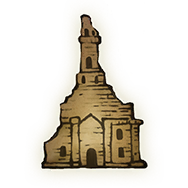
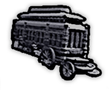
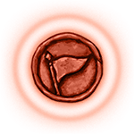

高级模式
夜王反推
中文
黑夜君临-地图种子识别器
正在初始化地图数据，请稍候...
请选择特殊地形
选择参数后开始识别地图种子
帮助与提示
×
📋
使用步骤
选择
夜王
（可选）
选择
地形
选择
出生点
（可跳过）
点选地图上的 POI：
PC
：左键标记教堂，右键选择其他选项
移动端
：单击标记教堂，长按选择其他选项
再次点击已标记的点可
取消标记
标记越多，种子筛选越快；仅剩一个时显示完整种子详情与地图图像
🗺️
POI 图标意义

教堂
法师塔
大商人（特殊商人）

马车（石剑钥匙）

破败小屋（祷告屋）
空（该位置无建筑）